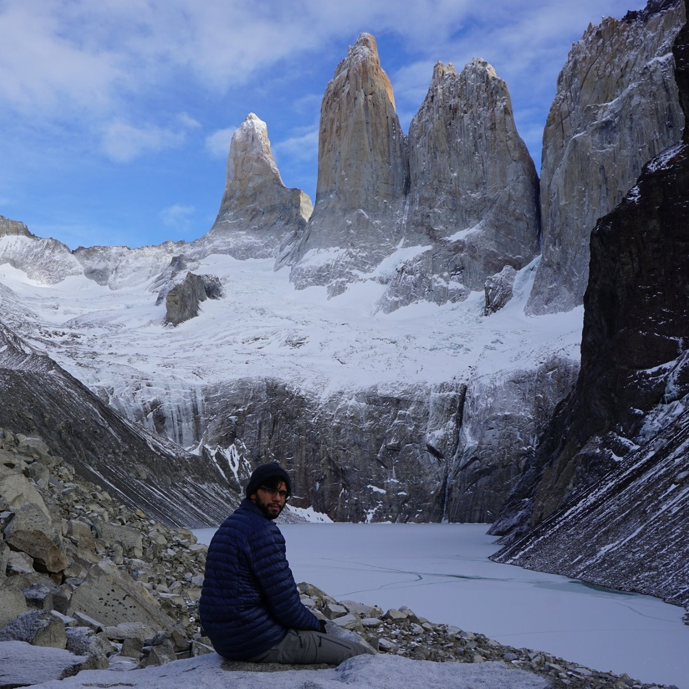
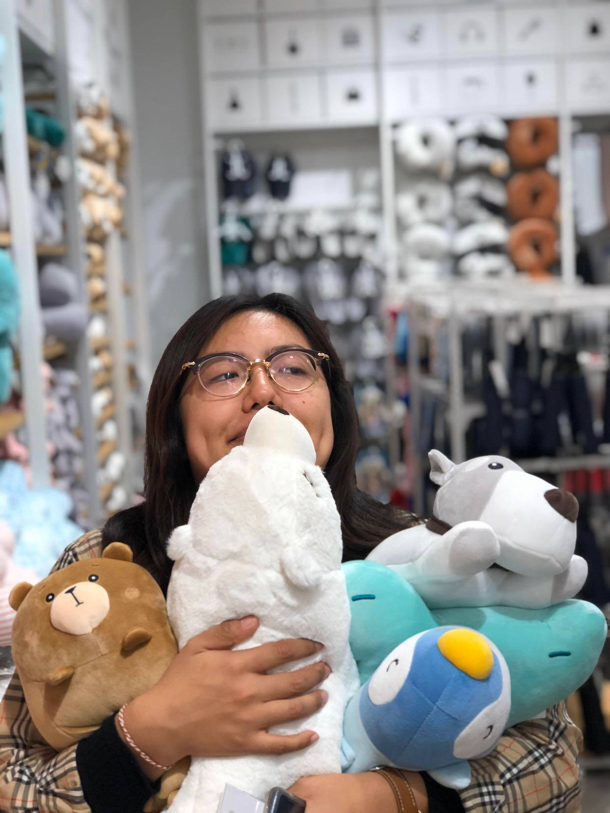

Contributors
|  |
Nishant KaloniaNishant worked on creating the framework for computational pipeline and UI controls, writing shaders for visualizing scalar and vector quantities, implementing method to add smoke elements to the environment, debugging in general, and writing the milestone deliverable. |
Katie KimKatie worked on the web design—incuding both simulation html and main index html (and the current fun extra page), including js files for dat.gui and three.js, debugging mouse positioning, helped with debugging shaders, and creating the final presentation. |
 |
Yifan ZhangYifan worked on implementing fragment shaders (advection, divergence, gradient, jacobi), writing the project proposal, and creating the final video demo. (Most importantly, he chose the colour hot pink #ff69b4 for the website theme colour). |